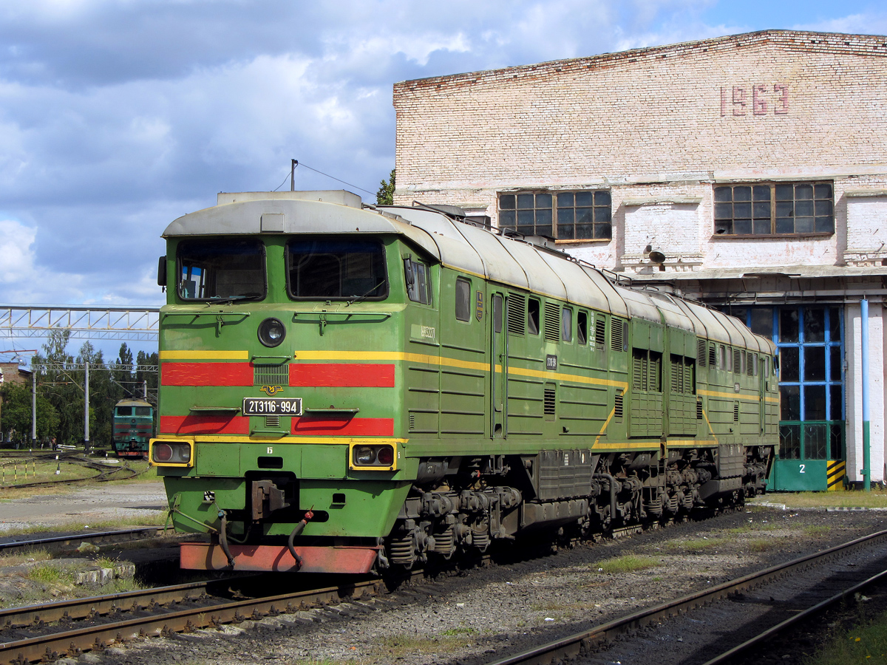

Грузовой тепловоз — Ворошиловградский (Луганский) завод
2ТЭ116 — самый массовый грузовой двухсекционный тепловоз с электрической передачей переменно-постоянного тока на постсоветском пространстве. Строился на Ворошиловградском (позднее Луганском) тепловозостроительном заводе в УССР, а после распада СССР — на Украине: базовые 2ТЭ116 выпускались с 1971 по 2007 год, а вся серия с модификациями — с 1971 по 2016 год, всего 2176 локомотивов. Осевая формула 2×(30−30), нагрузка от оси на рельсы 23 тонны, мощность каждого дизеля — 3060 л.с. (2250,6 кВт), конструкционная скорость — 100 км/ч. За прочные и неприхотливые машины их прозвали «Горбатый», «Фантомас» и «Боинг»; они работали в СССР, а затем в России, на Украине, в Латвии, Эстонии, Узбекистане, Казахстане и Монголии.